Preparazione al Battesimo # Una scelta consapevole Parrocchia Santa Maria in Campitelli, Grottaglie --- # Perché battezzare? --- ### Il Battesimo di Gesù <p class="stretch">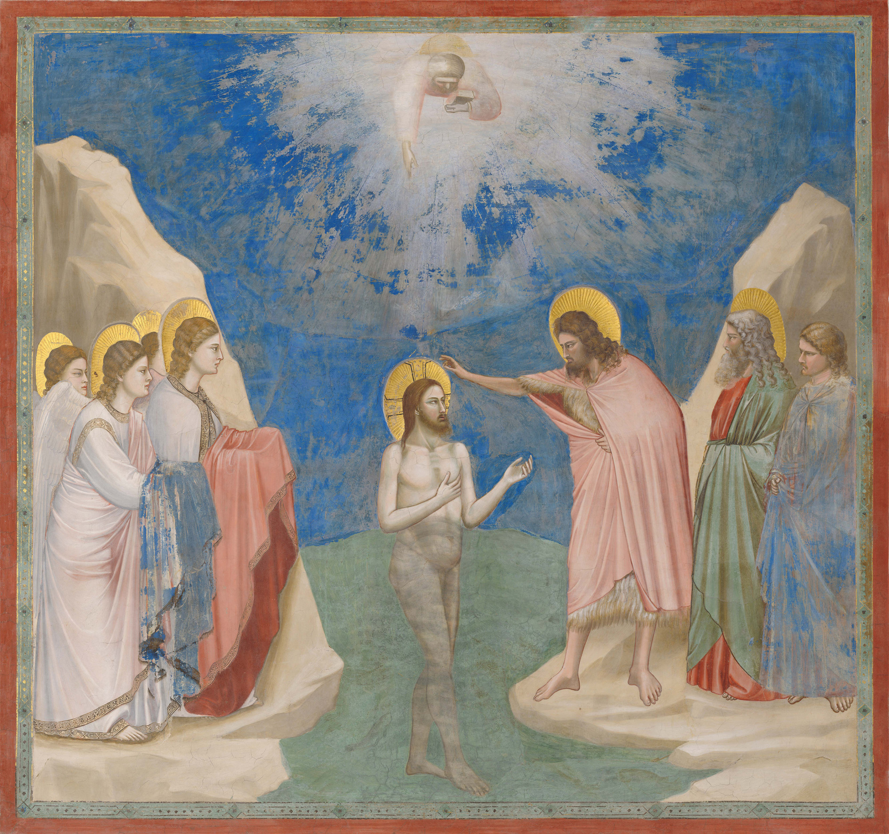</p> Note: Molti pellegrini venivano dalla Giudea e Galilea per farsi battezzare da **Giovanni**, che compiva un **battesimo di purificazione** per immersione. Marco ci racconta che Gesù si mette in fila con i peccatori per ricevere il battesimo. Una volta battezzato lo Spirito Santo scende su di lui come una colomba e si sente una voce dal cielo: questo è il mio figlio prediletto. È come se il cielo si squarci e **si uniscono grazia e peccato**, non siamo più solo purificati dal battesimo, come i battezzati da Giovanni, ma **in Cristo siamo salvati e redenti**. **Fusione tra cielo e terra.** Il battesimo in Gesù è un'immersione nella vita di Gesù. **Dio viene ad abitare in noi**, siamo noi il tempio. Attraverso il bambino, poi, anche noi riscopriamo il nostro battesimo, e rinnoviamo la presenza di Dio nella famiglia. --- ### Il Battesimo ci libera dal peccato <p class="stretch"><img src="immagini/lavaggio.jpg"></p> Note: **Dal peccato originale** se chi è battezzato è bambino; da tutti i peccati se si tratta di un adulto. Il Battesimo libera anche **dall’istigatore al peccato**, e cioè dal diavolo, dal suo dominio e dal suo influsso. È una prima forma di esorcismo. === ### Il Battesimo ci libera dal peccato <p class="stretch">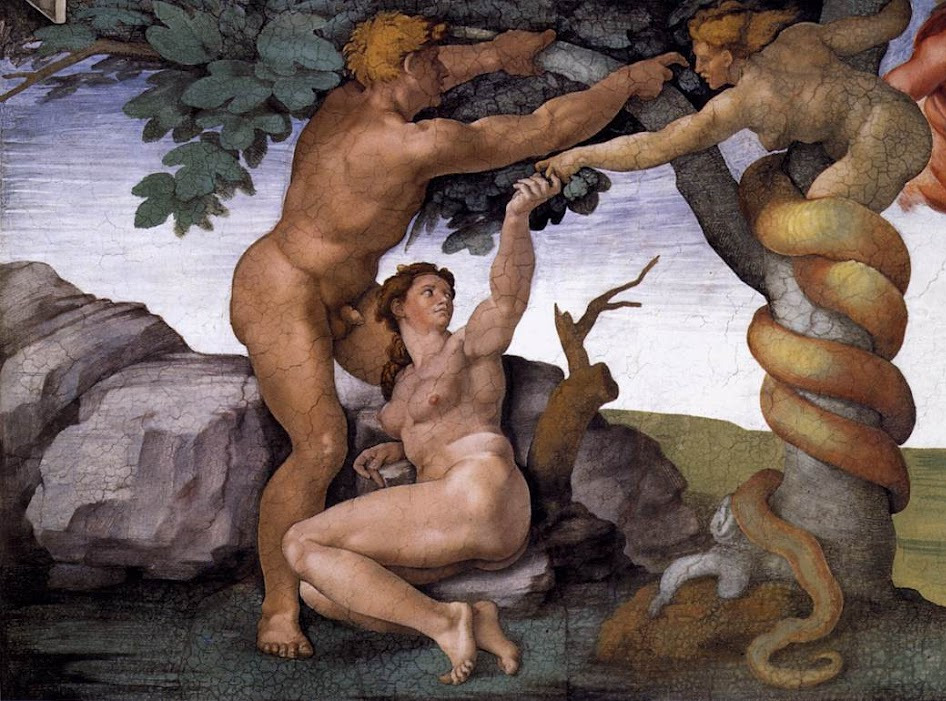</p> Note: Dio vieta ad Adamo ed Eva di mangiare dell’albero della conoscenza del bene e del male, perché non era una cosa buona per loro. **Il serpente insinua il dubbio** che Dio abbia mentito, ed Adamo ed Eva ne mangiano. Il **peccato** consiste in una **mancanza di fiducia** nella bontà di Dio. === ### Il Battesimo ci libera dal peccato <p class="stretch">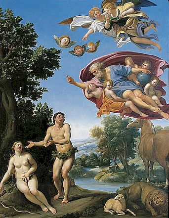</p> Note: Adamo ed Eva hanno perso la padronanza delle facoltà spirituali dell’anima sul corpo: si scoprono nudi. **La donna che tu mi hai messo a fianco mi ha dato da mangiare dell'albero.** Il peccato crea **divisione** tra Adamo ed Eva, e tra loro e Dio (**scaricabarile**). Persa la comunione con Dio, sorgente della vita, sono quindi destinati alla morte. === ### Il Battesimo ci libera dal peccato <p class="stretch"><video controls data-src="immagini/simba.webm"></p> Note: Il peccato originale si trasmette per **propagazione** nel senso che i nostri progenitori, ormai **contaminati dal peccato**, non hanno potuto far altro che comunicare ai loro discendenti una **natura priva della santità** e giustizia originali e **inclinata al male**. Un esempio: **se la sorgente di un fiume contenesse acqua inquinata, in tutto il prosieguo del suo corso non potremo trovare altro che acqua inquinata.** --- ### Il Battesimo è segno della scelta di far parte della Chiesa <p class="stretch"></p> Note: Non si nasce cristiani, ma lo si diventa attraverso un **atto** personale. Quando si tratta di bambini, l’atto personale lo fanno i genitori al loro posto (come per alimentazione, sport-allenatore, scuola-insegnanti). I musulmani non hanno un atto attraverso il quale diventano appartenenti all’islam. Si è musulmani per il solo fatto che si nasce da genitori musulmani. L’adesione a Cristo, invece, è sempre una risposta personale, un atto libero. Ai bambini si dà il meglio, fede, speranza, misericordia. Essere credenti o atei non è lo stesso. La vera libertà è nella conoscenza. --- ### Il Battesimo ci rigenera come figli di Dio <p class="stretch">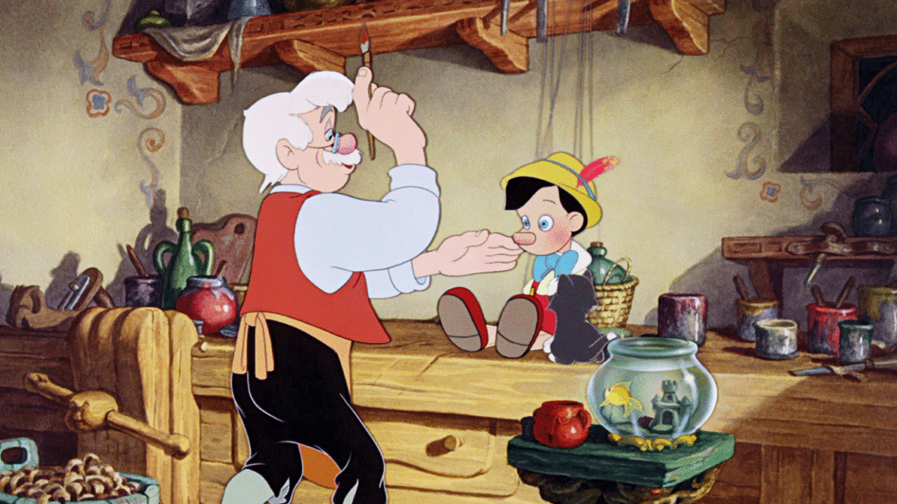</p> Note: Figli di Dio non si nasce, ma **si diventa**. Diventare **figli** significa ricevere dentro di sé un germe di vita divina. Diventando Figli di Dio si ricevono tutti i **diritti** che ha un figlio nei confronti del genitore (compreso quello dell’eredità). A questi diritti corrispondo i **doveri** del figlio. --- ### Il Battesimo ci fa diventare parte del corpo mistico di Cristo <p class="stretch"></p> Note: Gesù dice: “io sono la vite, voi i tralci”. Col Battesimo il cristiano viene innestato a Cristo come il tralcio alla vite. Ciò significa che si impegna ad attingere la **linfa vitale** per i suoi pensieri, per i suoi sentimenti e per le sue azioni da Cristo. Col Battesimo il cristiano accetta che Cristo espanda la sua **vita divina dentro di lui**. Questa linfa vitale è **lo Spirito Santo**, che **opera** in noi. === ### Il Battesimo ci fa diventare parte del corpo mistico di Cristo <p class="stretch"><video controls data-src="immagini/spirito_santo.webm"></p> --- ### Il Battesimo ci segna con il sigillo spirituale indelebile dell'appartenenza a Cristo <p class="stretch"></p> Note: Questo sigillo **non viene cancellato da alcun peccato**, sebbene il peccato impedisca al Battesimo di portare frutti di salvezza. **Non per merito ma per Grazia.** Conferito una volta per sempre, il Battesimo non può essere ripetuto. === ### Il Battesimo ci segna con il sigillo spirituale indelebile dell'appartenenza a Cristo *Si dimentica forse una donna del suo bambino,* \ *così da non commuoversi per il figlio delle sue viscere?* \ *Anche se queste donne si dimenticassero,* \ *io invece non ti dimenticherò mai.* \ *Ecco, ti ho disegnato sulle palme delle mie mani.* (Isaia 49, 15-16a) --- ### Perché battezzare? - ci libera dal peccato - è segno della scelta di far parte della Chiesa - ci rigenera come figli di Dio - ci fa diventare parte del corpo mistico di Cristo - ci segna con il sigillo spirituale indelebile dell'appartenenza a Cristo --- # Educare nella fede Note: --- ### Un impegno dei genitori, padrino e madrina <p class="stretch"></p> Note: Durante il Battesimo, i genitori e il padrino e la madrina **si impegnano ad educare il bambino nella fede**. È sulla fede dei genitori che il bambino viene battezzato. La fede è come una fiamma accesa che illumina e riscalda. Ai genitori è chiesto di **custodire** e di **alimentare** questa fiamma. Adulti e bambini dovranno camminare insieme sulla via di Gesù e alimentare la fede in lui. --- ### I bambini ci guardano <p class="stretch"><video controls data-src="immagini/imitano.webm"></p> --- ### I bambini ci guardano <p class="stretch"></p> Note: I bambini ci guardano continuamente. I bambini **imiteranno il linguaggio dell'amore** che si parla a casa. Rispetto della donna, accoglienza, condivisione, empatia, collaborazione, parole gentili. --- # I segni della celebrazione --- ### Il nome <p class="stretch"></p> Note: Dare **il nome** ad una persona equivale a riconoscere la sua esclusiva identità, infatti ogni bambino è chiamato ad essere ciò che nessun'altra persona è mai stata e nessun'altra persona mai sarà. Quando Dio dà il nome ad una persona o a un luogo vuole segnare anche un'**appartenenza**. --- ### Il segno di croce <p class="stretch">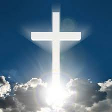</p> Note: **Il segno della croce**, all'inizio della celebrazione, esprime il **sigillo** di Cristo su colui che sta per appartenergli e significa la grazia della redenzione che Cristo ci ha acquistato per mezzo della sua croce. La croce non è strumento di morte, ma segno di una vita che non morirà mai (abbraccio). Per questo possiamo prenderci l'impegno di fare un segno di croce ogni mattina o ogni sera sulla fronte del bambino. --- ### La Parola di Dio <p class="stretch">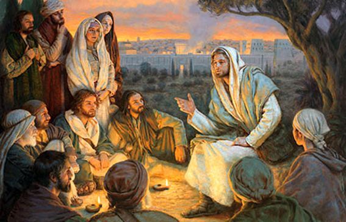</p> Note: L'annunzio della **Parola di Dio** illumina con la **verità rivelata** i candidati e l'assemblea, e suscita la risposta della fede, inseparabile dal Battesimo. Infatti il Battesimo è in modo tutto particolare «il sacramento della fede», poiché segna l'ingresso sacramentale nella vita di fede. --- ### L'invocazione dei santi <p class="stretch">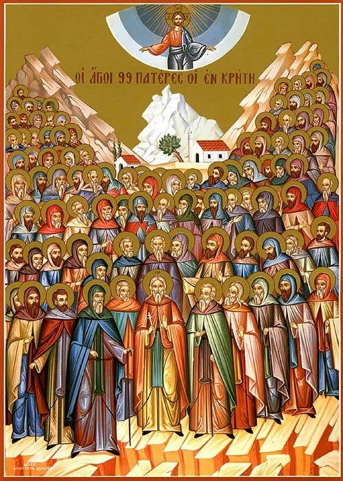</p> Note: Si invocano i santi perché la **Chiesa celeste e quella terrena** partecipano insieme al nuovo ingresso, **pregando per lui o lei**. --- ### L'esorcismo <p class="stretch">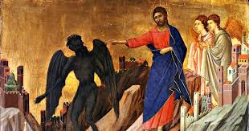</p> Note: Dal momento che il Battesimo significa la liberazione dal peccato e dal suo istigatore, il diavolo, vengono pronunziati uno o più **esorcismi** sul candidato. --- ### L'olio dei catecumeni <p class="stretch">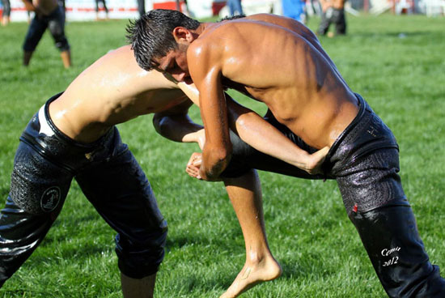</p> Note: Il candidato viene unto con l'**olio dei catecumeni**, per ricevere forza nella battaglia contro il peccato. --- ### La rinuncia a Satana <p class="stretch">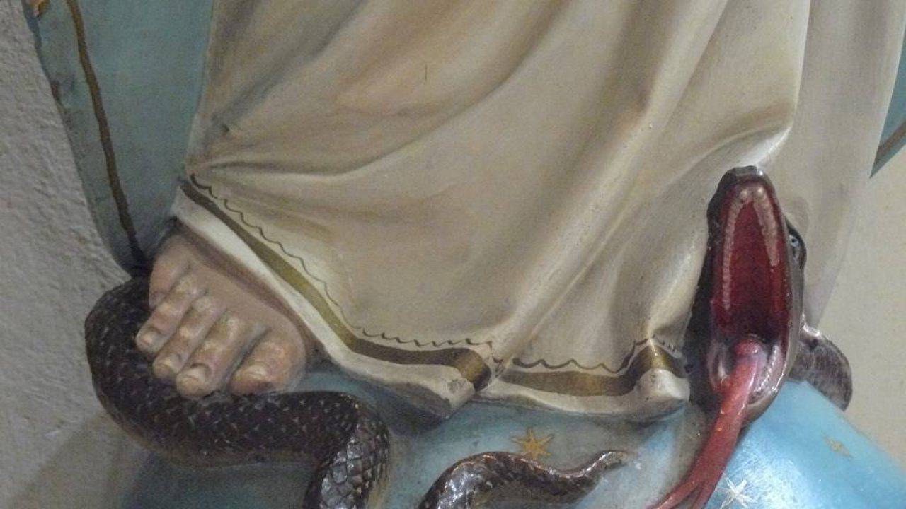</p> Note: Il candidato **rinunzia esplicitamente a Satana**. --- ### La professione di fede <p class="stretch">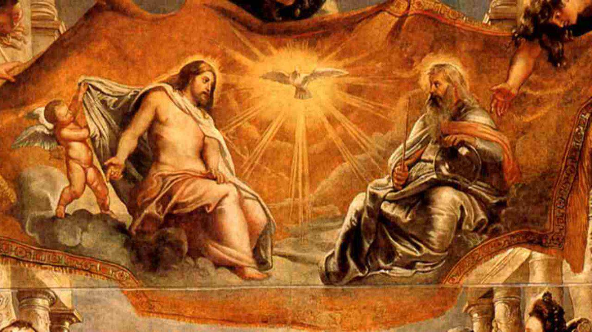</p> Note: Così preparato, può **professare la fede** della Chiesa alla quale sarà «consegnato» per mezzo del Battesimo. --- ### La benedizione dell'acqua <p class="stretch"><img src="immagini/segni_acqua.webp"></p> Note: L'**acqua battesimale** viene quindi consacrata. La Chiesa chiede a Dio che, per mezzo del suo Figlio, la potenza dello Spirito Santo discenda su quest'acqua, in modo che quanti vi saranno battezzati nascano «dall'acqua e dallo Spirito» (Gv 3,5). --- ### La triplice immersione <p class="stretch">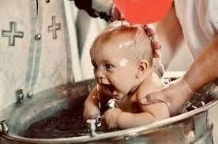</p> Note: Segue poi il rito essenziale del sacramento: il Battesimo propriamente detto, che significa e opera la morte al peccato e l'ingresso nella vita della Santissima Trinità attraverso la configurazione al mistero pasquale di Cristo. Il Battesimo viene compiuto nel modo più espressivo per mezzo della **triplice immersione nell'acqua battesimale**. Ma fin dall'antichità può anche essere conferito versando per tre volte l'acqua sul capo del candidato. Nella Chiesa latina questa triplice infusione è accompagnata dalle parole del ministro: «N., io ti battezzo nel nome del Padre e del Figlio e dello Spirito Santo». --- ### Il sacro crisma <p class="stretch">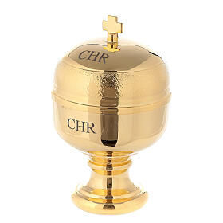</p> Note: L'unzione con il **sacro crisma**, olio profumato consacrato dal Vescovo, significa il dono dello Spirito Santo elargito al nuovo battezzato. Egli è divenuto un cristiano, ossia «unto» di Spirito Santo, incorporato a Cristo, che è unto **Sacerdote, Profeta e Re**. Nella liturgia romana, essa annunzia una seconda unzione con il sacro crisma che sarà effettuata dal Vescovo: cioè il sacramento della Confermazione, il quale, per così dire, «conferma» e porta a compimento l'unzione battesimale. --- ### Sacerdote, re e profeta <p class="stretch">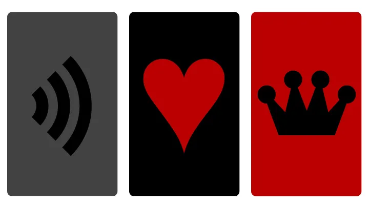</p> Note: Il battezzato è profeta, cioé è chiamato ad annunciare la parola di Dio, con le parole ma soprattutto con la testimonianza. Il battezzato è sacerdote, perché può rivolgersi direttamente a Dio e offrire preghiere e sacrifici. Il battezzato è re, perché partecipa della regalità di Cristo. La prima regalità dunque si esercita su noi stessi, diventando signori delle nostre passioni e dei nostri impulsi, sapendoci orientare verso la santità. Inoltre si è re servendo nella carità e nella giustizia Gesù, che è presente nei nostri fratelli, in famiglia, nella Chiesa e nel mondo, avendo una particolare attenzione per i più deboli e più piccoli (Mt 25,40). --- ### La veste bianca <p class="stretch">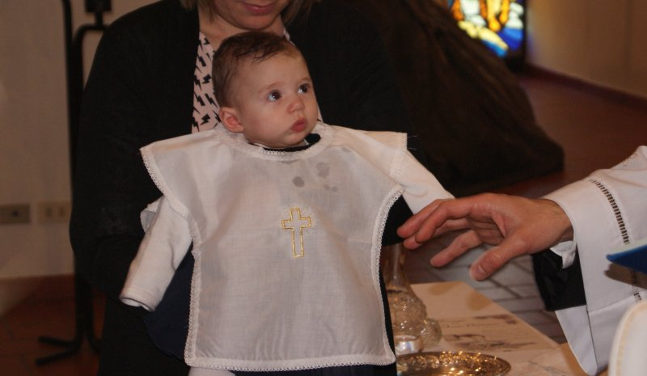</p> Note: La **veste bianca** significa che il battezzato si è rivestito di Cristo, che egli è risorto con Cristo. --- ### Il cero pasquale <p class="stretch">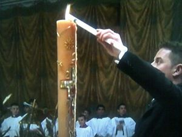</p> Note: La **candela, accesa al cero pasquale**, significa che Cristo ha illuminato il neofita. In Cristo i battezzati sono «la luce del mondo» (Mt 5,14). --- ### Effatà <p class="stretch"><img src="immagini/segni_effata.jpg"></p> Note: Il segno dell'**effatà**, in cui il sacerdote tocca le orecchie e la bocca del battezzato e chiede di apririrli alla Parola di Dio. --- ### Il Padre Nostro <p class="stretch">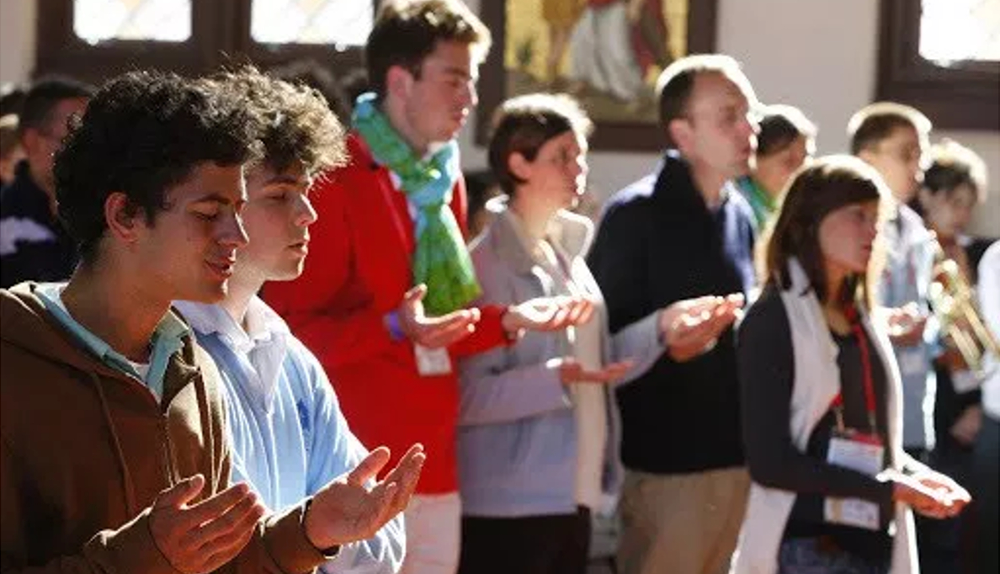</p> Note: Il nuovo battezzato è ora figlio di Dio nel Figlio unigenito. Può dire la preghiera dei figli di Dio: il **Padre nostro**. --- ### La benedizione <p class="stretch">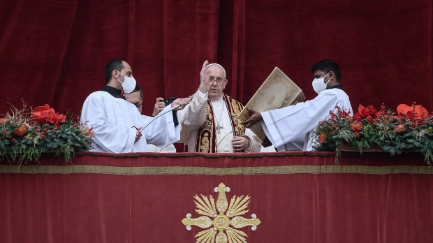</p> Note: La **benedizione solenne** conclude la celebrazione del Battesimo. In occasione del Battesimo dei neonati **la benedizione della madre** occupa un posto di rilievo. --- # Il Battesimo è un dono <p class="stretch">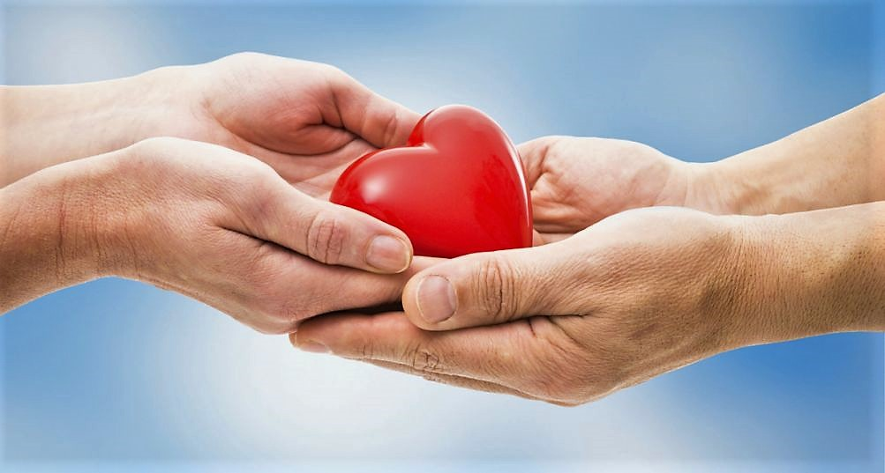</p> Note: Come con coraggio abbiamo donato la vita, perché crediamo sia una benedizione, così abbiamo il compito di vivere con gioia e di essere felici, consapevoli che è il dono più grande che possiamo fare al nostro bambino. Perché se non credi nel battesimo, questo bambino è destinato a morire. Il battesimo invece ci dice che il bambino ha la vita eterna, che viene da Dio, che è stato voluto ed amato per quello che è. Dio non produce scarti. --- # Grazie